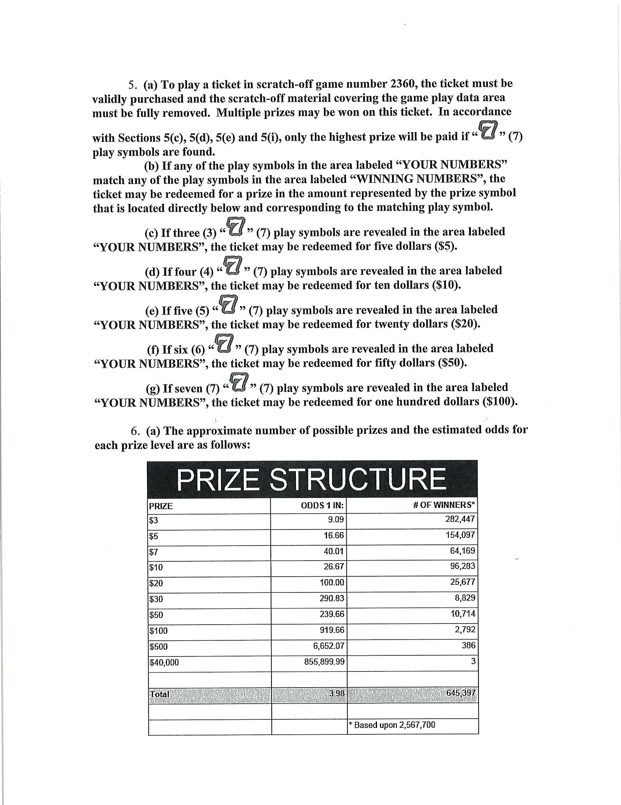
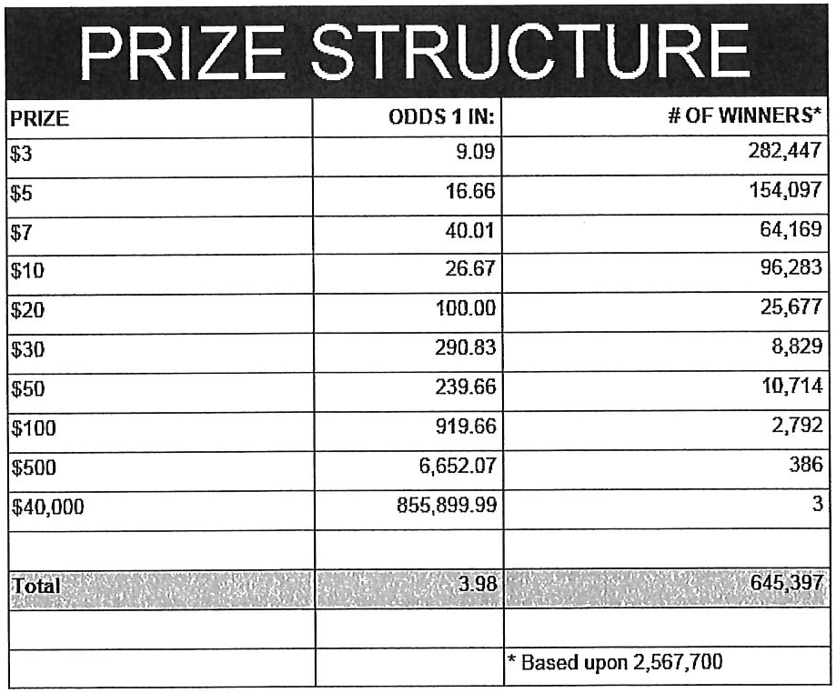
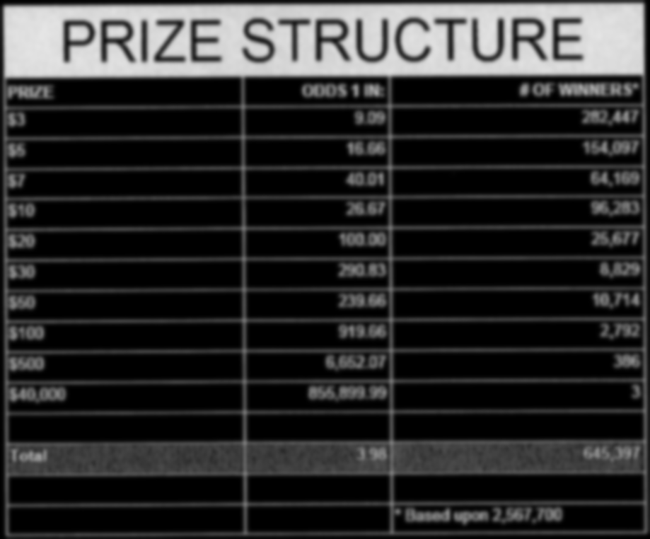
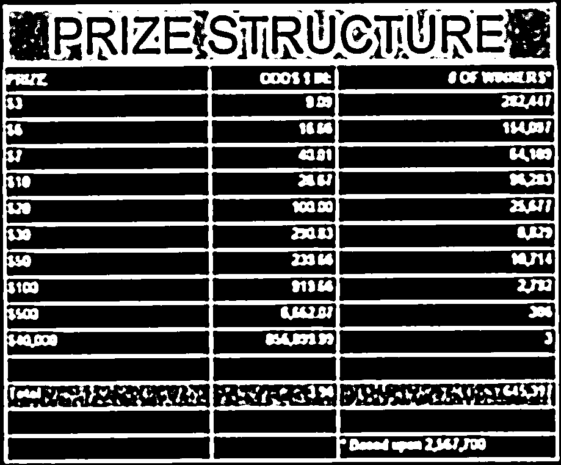
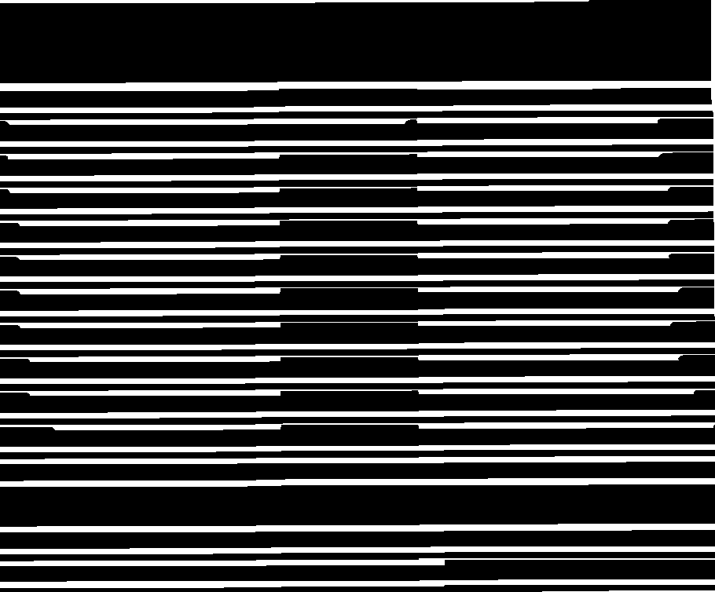
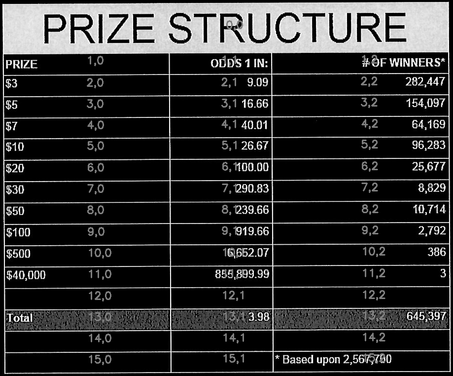
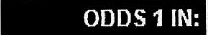
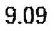

PDF Parsing
Table of Contents
- 1. Overview
- 2. Preparing data
- 3. Detecting tables
- 4. OCR tables
- 5. Files
- 6. Utils
1 Overview
This Python package provides utilities for extracting tabular data from PDF files and images of tables.
Given an image that contains a table…

Extract the the text into a CSV format…
PRIZE,ODDS 1 IN:,# OF WINNERS* $3,9.09,"282,447" $5,16.66,"154,097" $7,40.01,"64,169" $10,26.67,"96,283" $20,100.00,"25,677" $30,290.83,"8,829" $50,239.66,"10,714" $100,919.66,"2,792" $500,"6,652.07",386 "$40,000","855,899.99",3 1,i223, Toa,, ,, ,,"* Based upon 2,567,700"
The package is split into modules with narrow focuses.
pdf_to_imagesuses Poppler and ImageMagick to extract images from a PDF.extract_tablesfinds and extracts table-looking things from an image.extract_cellsextracts and orders cells from a table.ocr_imageuses Tesseract to OCR the text from an image of a cell.ocr_to_csvconverts into a CSV the directory structure thatocr_imageoutputs.
1.1 Requirements
1.1.1 Python packages
- numpy
- opencv-python
- pytesseract
1.1.2 External
pdfimagesfrom Poppler- Tesseract
mogfrifyImageMagick
1.2 Contributing
This package was created in a literate programming style with the help of Babel.
The unfortunate downside is the obscurity of the tooling. It creates a bit of a barrier for contributors who aren’t already familiar with Emacs and Babel.
1.3 Example usage
Here is an example of a shell script that uses each module to turn a pdf with a table into CSV output.
Depending on your needs, you may not need all of these steps. If you already have an image of a table, you can jum straight to extracting the cells.
Each piece is its own python module, so you can also simply import the pieces you need into your own python projects and use them as needed.
#!/bin/sh PDF=$1 python -m table_ocr.pdf_to_images $PDF | grep .png > /tmp/pdf-images.txt cat /tmp/pdf-images.txt | xargs -I{} python -m table_ocr.extract_tables {} | grep table > /tmp/extracted-tables.txt cat /tmp/extracted-tables.txt | xargs -I{} python -m table_ocr.extract_cells {} | grep cells > /tmp/extracted-cells.txt cat /tmp/extracted-cells.txt | xargs -I{} python -m table_ocr.ocr_image {} for image in $(cat /tmp/extracted-tables.txt); do dir=$(dirname $image) python -m table_ocr.ocr_to_csv $(find $dir/cells -name "*.txt") done
Any extra args you pass after the image path to python -m table_ocr.ocr_image will be passed directly to tesseract as options. If you don’t pass anything, reasonable english defaults are used.
1.4 Possible improvements
Detect text with the stroke-width-transform alogoritm. https://zablo.net/blog/post/stroke-width-transform-swt-python/index.html
2 Preparing data
Not all pdfs need to be sent through OCR to extract the text content. If you can click and drag to highlight text in the pdf, then the tools in this library probably aren’t necessary.
2.1 Converting PDFs to images
This code calls out to pdfimages from Poppler.
# Wrapper around the Poppler command line utility "pdfimages" and helpers for # finding the output files of that command. def pdf_to_images(pdf_filepath): """ Turn a pdf into images Returns the filenames of the created images sorted lexicographically. """ directory, filename = os.path.split(pdf_filepath) image_filenames = pdfimages(pdf_filepath) # Since pdfimages creates a number of files named each for there page number # and doesn't return us the list that it created return sorted([os.path.join(directory, f) for f in image_filenames]) def pdfimages(pdf_filepath): """ Uses the `pdfimages` utility from Poppler (https://poppler.freedesktop.org/). Creates images out of each page. Images are prefixed by their name sans extension and suffixed by their page number. This should work up to pdfs with 999 pages since find matching files in dir uses 3 digits in its regex. """ directory, filename = os.path.split(pdf_filepath) if not os.path.isabs(directory): directory = os.path.abspath(directory) filename_sans_ext = filename.split(".pdf")[0] # pdfimages outputs results to the current working directory with working_dir(directory): subprocess.run(["pdfimages", "-png", filename, filename.split(".pdf")[0]]) image_filenames = find_matching_files_in_dir(filename_sans_ext, directory) logger.debug( "Converted {} into files:\n{}".format(pdf_filepath, "\n".join(image_filenames)) ) return image_filenames def find_matching_files_in_dir(file_prefix, directory): files = [ filename for filename in os.listdir(directory) if re.match(r"{}-\d{{3}}.*\.png".format(re.escape(file_prefix)), filename) ] return files
2.2 Detecting image orientation and applying rotation.
Tesseract can detect orientation and we can then use ImageMagick’s mogrify to rotate the image.
Here’s an example of the output we get from orientation detection with Tesseract.
➜ example/ tesseract --psm 0 example-000.png - Page number: 0 Orientation in degrees: 90 Rotate: 270 Orientation confidence: 26.86 Script: Latin Script confidence: 2.44
The following are some helpers to detect orientation of the images that Poppler extracted and, if the images are rotated or skewed, use ImageMagick’s `mogrify` to correct the rotation. This makes OCR more straightforward.
def preprocess_img(filepath, tess_params=None): """Processing that involves running shell executables, like mogrify to rotate. Uses tesseract to detect rotation. Orientation and script detection is only available for legacy tesseract (--oem 0). Some versions of tesseract will segfault if you let it run OSD with the default oem (3). """ if tess_params is None: tess_params = ["--psm", "0", "--oem", "0"] rotate = get_rotate(filepath, tess_params) logger.debug("Rotating {} by {}.".format(filepath, rotate)) mogrify(filepath, rotate) def get_rotate(image_filepath, tess_params): """ """ tess_command = ["tesseract"] + tess_params + [image_filepath, "-"] output = ( subprocess.check_output(tess_command) .decode("utf-8") .split("\n") ) output = next(l for l in output if "Rotate: " in l) output = output.split(": ")[1] return output def mogrify(image_filepath, rotate): subprocess.run(["mogrify", "-rotate", rotate, image_filepath])
3 Detecting tables
This answer from opencv.org was heavily referenced while writing the code around table detection: https://answers.opencv.org/question/63847/how-to-extract-tables-from-an-image/.
It’s much easier to OCR a table when the table is the only thing in the image. This code detects tables in an image and returns a list of images of just the tables, no surrounding text or noise.
The blurring, thresholding, and line detection is used here as well as later on for cell extraction. They are good techniques for cleaning an image up in a way that makes things like shape detection more accurate.
def find_tables(image): BLUR_KERNEL_SIZE = (17, 17) STD_DEV_X_DIRECTION = 0 STD_DEV_Y_DIRECTION = 0 blurred = cv2.GaussianBlur(image, BLUR_KERNEL_SIZE, STD_DEV_X_DIRECTION, STD_DEV_Y_DIRECTION) MAX_COLOR_VAL = 255 BLOCK_SIZE = 15 SUBTRACT_FROM_MEAN = -2 img_bin = cv2.adaptiveThreshold( ~blurred, MAX_COLOR_VAL, cv2.ADAPTIVE_THRESH_MEAN_C, cv2.THRESH_BINARY, BLOCK_SIZE, SUBTRACT_FROM_MEAN, ) vertical = horizontal = img_bin.copy() SCALE = 5 image_width, image_height = horizontal.shape horizontal_kernel = cv2.getStructuringElement(cv2.MORPH_RECT, (int(image_width / SCALE), 1)) horizontally_opened = cv2.morphologyEx(img_bin, cv2.MORPH_OPEN, horizontal_kernel) vertical_kernel = cv2.getStructuringElement(cv2.MORPH_RECT, (1, int(image_height / SCALE))) vertically_opened = cv2.morphologyEx(img_bin, cv2.MORPH_OPEN, vertical_kernel) horizontally_dilated = cv2.dilate(horizontally_opened, cv2.getStructuringElement(cv2.MORPH_RECT, (40, 1))) vertically_dilated = cv2.dilate(vertically_opened, cv2.getStructuringElement(cv2.MORPH_RECT, (1, 60))) mask = horizontally_dilated + vertically_dilated contours, heirarchy = cv2.findContours( mask, cv2.RETR_EXTERNAL, cv2.CHAIN_APPROX_SIMPLE, ) MIN_TABLE_AREA = 1e5 contours = [c for c in contours if cv2.contourArea(c) > MIN_TABLE_AREA] perimeter_lengths = [cv2.arcLength(c, True) for c in contours] epsilons = [0.1 * p for p in perimeter_lengths] approx_polys = [cv2.approxPolyDP(c, e, True) for c, e in zip(contours, epsilons)] bounding_rects = [cv2.boundingRect(a) for a in approx_polys] # The link where a lot of this code was borrowed from recommends an # additional step to check the number of "joints" inside this bounding rectangle. # A table should have a lot of intersections. We might have a rectangular image # here though which would only have 4 intersections, 1 at each corner. # Leaving that step as a future TODO if it is ever necessary. images = [image[y:y+h, x:x+w] for x, y, w, h in bounding_rects] return images
Here is an the an example of the result of the find_tables function.
import cv2 image_filename = "resources/examples/example-page.png" image = cv2.imread(image_filename, cv2.IMREAD_GRAYSCALE) image = find_tables(image)[0] cv2.imwrite("resources/examples/example-table.png", image)
↓

3.1 Improving accuracy
It’s likely that some images will contain tables that aren’t accurately recognized by the code above. The code will then need to be made more robust. But how will we know that changes to the code don’t break the detection of tables that were previously detected?
It might be good to add some type of test suite in the future that contains a spec that matches a pdf with the pages and pixel coordinates of the detected tables. The coordinates would need to have a range. Something like “example-1.pdf, page-2.png, [450:470, 200:210, 800:820, 1270:1290]” where the elements of the list are valid x, y, w, h ranges. So the test will pass if if the x, y, width and height are anywhere in that range.
4 OCR tables
Tesseract does not perform well when run on images of tables. It performs best when given a single line of text with no extra noise.
Therefore, our next task is to find and extract the bounding box of each cell in the table. Run tesseract on each cell. Print a comma seperated output.
We’ll start with an image shown at the end of the previous section.
4.1 Training Tesseract
Tesseract is used for recognizing characters. It is not involved in extracting the tables from an image or in extracting cells from the table.
It’s a very good idea to train tesseract. Accuracy will improve tremendously.
Clone the tesstrain repo at https://github.com/tesseract-ocr/tesstrain.
Run the ocr_tables script on a few pdfs to generate some training data. That
script outputs pairs of .png and .gt.txt files that can be used by
tesstrain.
Make sure the .gt.txt files contain an accurate recognition of the
corresponding image. Since the first few runs will be untrained, you’ll probably
need to fix up a few of the text files.
Once they are accurate, move them to a new subdirectory of the tesstrain repo;
tesstrain/data/<model-name>-ground-truth/.
You’ll also need to clone the tessdata_best repo,
https://github.com/tesseract-ocr/tessdata_best and the
https://github.com/tesseract-ocr/langdata to use as the start of the
training model.
I’m actually not sure how much the punctuation and numbers from langdata help.
I didn’t keep accurate records while playing with the training, I don’t
thoroughly understand it, and it’s not profitable for me to explore it at the
moment. It worked for my purposes and that has been good enough.
make training MODEL_NAME=table-ocr START_MODEL=eng TESSDATA=~/src/tessdata_best PUNC_FILE=~/src/langdata/eng/eng.punc NUMBERS_FILE=~/src/langdata/eng/eng.numbers
Once the training is complete, there will be a new file
tesstrain/data/<model-name>.traineddata. Copy that file to the directory
Tesseract searches for models. On my machine, it was /usr/local/share/tessdata/.
4.1.1 Training tips
Here is a tip for quickly creating training data.
The output of the ocr_cells script will be a directory named ocr_data that
will have two files for each cell. One file is the image of the cell and the
other file is the OCR text.
You’ll want to compare each image to its OCR text to check for accuracy. If the text doesn’t match, you’ll want to update the text and add the image to the training data.
The fastest way to do this is with feh.
feh lets you view an image and a caption at the same time and lets you edit
the caption from within feh.
feh expects the captions to be named <image-name>.txt, so use a little
shell-fu to do a quick rename.
for f in *.txt; do f1=$(cut -d"." -f1 <(echo $f)); mv $f ${f1}.png.txt; done
Then run feh -K . to specify the current directory as the caption directory.
This will open a window with the first image in the directory and its caption.
Press c to edit the caption (if needed) and n~/~p to move to the
next/previons images. Press q to quit.
When finished, rename the files back to the filename structure that Tesseract looks for in training.
for f in *.txt; do f1=$(cut -d"." -f1 <(echo $f)); mv $f ${f1}.gt.txt; done
4.2 Blur
Blurring helps to make noise less noisy so that the overall structure of an image is more detectable.
That gray row at the bottom is kind of noisy. If we don’t somehow clean it up, OpenCV will detect all sorts of odd shapes in there and it will throw off our cell detection.
Cleanup can be accomplished with a blur followed by some thresholding.
BLUR_KERNEL_SIZE = (17, 17) STD_DEV_X_DIRECTION = 0 STD_DEV_Y_DIRECTION = 0 blurred = cv2.GaussianBlur(image, BLUR_KERNEL_SIZE, STD_DEV_X_DIRECTION, STD_DEV_Y_DIRECTION)
image = ~cv2.imread("resources/examples/example-table.png", cv2.IMREAD_GRAYSCALE) <<blur>> cv2.imwrite("resources/examples/example-table-blurred.png", blurred)

4.3 Threshold
We’ve got a bunch of pixels that are gray. Thresholding will turn them all either black or white. Having all black or white pixels lets us do morphological transformations like erosion and dilation.
MAX_COLOR_VAL = 255 BLOCK_SIZE = 15 SUBTRACT_FROM_MEAN = -2 img_bin = cv2.adaptiveThreshold( ~blurred, MAX_COLOR_VAL, cv2.ADAPTIVE_THRESH_MEAN_C, cv2.THRESH_BINARY, BLOCK_SIZE, SUBTRACT_FROM_MEAN, )
<<threshold>>
cv2.imwrite("resources/examples/example-table-thresholded.png", img_bin)

4.4 Finding the vertical and horizontal lines of the table
vertical = horizontal = img_bin.copy() SCALE = 5 image_width, image_height = horizontal.shape horizontal_kernel = cv2.getStructuringElement(cv2.MORPH_RECT, (int(image_width / SCALE), 1)) horizontally_opened = cv2.morphologyEx(img_bin, cv2.MORPH_OPEN, horizontal_kernel) vertical_kernel = cv2.getStructuringElement(cv2.MORPH_RECT, (1, int(image_height / SCALE))) vertically_opened = cv2.morphologyEx(img_bin, cv2.MORPH_OPEN, vertical_kernel) horizontally_dilated = cv2.dilate(horizontally_opened, cv2.getStructuringElement(cv2.MORPH_RECT, (40, 1))) vertically_dilated = cv2.dilate(vertically_opened, cv2.getStructuringElement(cv2.MORPH_RECT, (1, 60))) mask = horizontally_dilated + vertically_dilated
Note: There’s a wierd issue with the results of the example below when it’s evaluated as part of an export or a full-buffer evaluation. If you evaluate the example by itself, it looks the way it’s intended. If you evaluate it as part of an entire buffer evaluation, like during export, it’s distorted.
<<lines-of-table>>
cv2.imwrite("resources/examples/example-table-lines.png", mask)

4.5 Finding the contours
Blurring and thresholding allow us to find the lines. Opening the lines allows us to find the contours.
An “Opening” is an erosion followed by a dilation. Great examples and descriptions of each morphological operation can be found at https://docs.opencv.org/trunk/d9/d61/tutorial_py_morphological_ops.html.
Contours can be explained simply as a curve joining all the continuous points (along the boundary), having same color or intensity. The contours are a useful tool for shape analysis and object detection and recognition.
We can search those contours to find rectangles of certain size.
To do that, we can use OpenCV’s approxPolyEP function. It takes as arguments
the contour (list of contiguous points), and a number representing how different
the polygon perimeter length can be from the true perimeter length of the
contour. 0.1 (10%) seems to be a good value. The difference in perimeter
length between a 4-sided polygon and a 3-sided polygon is greater than 10% and
the difference between a 5+ sided polygon and a 4-sided polygon is less than
10%. So a 4-sided polygon is the polygon with the fewest sides that leaves the
difference in perimeter length within our 10% threshold.
Then we just get the bounding rectangle of that polygon and we have our cells!
We might need to do a little more filtering of those rectangles though. We might have accidentally found some noise such as another image on the page or a title header bar or something. If we know our cells are all within a certain size (by area of pixels) then we can filter out the junk cells by removing cells above/below certain sizes.
contours, heirarchy = cv2.findContours( mask, cv2.RETR_TREE, cv2.CHAIN_APPROX_SIMPLE, ) perimeter_lengths = [cv2.arcLength(c, True) for c in contours] epsilons = [0.05 * p for p in perimeter_lengths] approx_polys = [cv2.approxPolyDP(c, e, True) for c, e in zip(contours, epsilons)] # Filter out contours that aren't rectangular. Those that aren't rectangular # are probably noise. approx_rects = [p for p in approx_polys if len(p) == 4] bounding_rects = [cv2.boundingRect(a) for a in approx_polys] # Filter out rectangles that are too narrow or too short. MIN_RECT_WIDTH = 40 MIN_RECT_HEIGHT = 10 bounding_rects = [ r for r in bounding_rects if MIN_RECT_WIDTH < r[2] and MIN_RECT_HEIGHT < r[3] ] # The largest bounding rectangle is assumed to be the entire table. # Remove it from the list. We don't want to accidentally try to OCR # the entire table. largest_rect = max(bounding_rects, key=lambda r: r[2] * r[3]) bounding_rects = [b for b in bounding_rects if b is not largest_rect] cells = [c for c in bounding_rects]
4.6 Sorting the bounding rectangles
We want to process these from left-to-right, top-to-bottom.
I’ve thought of a straightforward algorithm for it, but it could probably be made more efficient.
We’ll find the most rectangle with the most top-left corner. Then we’ll find all of the rectangles that have a center that is within the top-y and bottom-y values of that top-left rectangle. Then we’ll sort those rectangles by the x value of their center. We’ll remove those rectangles from the list and repeat.
def cell_in_same_row(c1, c2): c1_center = c1[1] + c1[3] - c1[3] / 2 c2_bottom = c2[1] + c2[3] c2_top = c2[1] return c2_top < c1_center < c2_bottom orig_cells = [c for c in cells] rows = [] while cells: first = cells[0] rest = cells[1:] cells_in_same_row = sorted( [ c for c in rest if cell_in_same_row(c, first) ], key=lambda c: c[0] ) row_cells = sorted([first] + cells_in_same_row, key=lambda c: c[0]) rows.append(row_cells) cells = [ c for c in rest if not cell_in_same_row(c, first) ] # Sort rows by average height of their center. def avg_height_of_center(row): centers = [y + h - h / 2 for x, y, w, h in row] return sum(centers) / len(centers) rows.sort(key=avg_height_of_center)
To test if this code works, let’s try sorting the bounding rectangles and numbering them from right to left, top to bottom.
import cv2 image = cv2.imread("resources/examples/example-table.png", cv2.IMREAD_GRAYSCALE) <<blur>> <<threshold>> <<lines-of-table>> <<bounding-rects>> <<sort-contours>> FONT_SCALE = 0.7 FONT_COLOR = (127, 127, 127) for i, row in enumerate(rows): for j, cell in enumerate(row): x, y, w, h = cell cv2.putText( image, "{},{}".format(i, j), (int(x + w - w / 2), int(y + h - h / 2)), cv2.FONT_HERSHEY_SIMPLEX, FONT_SCALE, FONT_COLOR, 2, ) cv2.imwrite("resources/examples/example-table-cells-numbered.png", image)

def extract_cell_images_from_table(image): BLUR_KERNEL_SIZE = (17, 17) STD_DEV_X_DIRECTION = 0 STD_DEV_Y_DIRECTION = 0 blurred = cv2.GaussianBlur(image, BLUR_KERNEL_SIZE, STD_DEV_X_DIRECTION, STD_DEV_Y_DIRECTION) MAX_COLOR_VAL = 255 BLOCK_SIZE = 15 SUBTRACT_FROM_MEAN = -2 img_bin = cv2.adaptiveThreshold( ~blurred, MAX_COLOR_VAL, cv2.ADAPTIVE_THRESH_MEAN_C, cv2.THRESH_BINARY, BLOCK_SIZE, SUBTRACT_FROM_MEAN, ) vertical = horizontal = img_bin.copy() SCALE = 5 image_width, image_height = horizontal.shape horizontal_kernel = cv2.getStructuringElement(cv2.MORPH_RECT, (int(image_width / SCALE), 1)) horizontally_opened = cv2.morphologyEx(img_bin, cv2.MORPH_OPEN, horizontal_kernel) vertical_kernel = cv2.getStructuringElement(cv2.MORPH_RECT, (1, int(image_height / SCALE))) vertically_opened = cv2.morphologyEx(img_bin, cv2.MORPH_OPEN, vertical_kernel) horizontally_dilated = cv2.dilate(horizontally_opened, cv2.getStructuringElement(cv2.MORPH_RECT, (40, 1))) vertically_dilated = cv2.dilate(vertically_opened, cv2.getStructuringElement(cv2.MORPH_RECT, (1, 60))) mask = horizontally_dilated + vertically_dilated contours, heirarchy = cv2.findContours( mask, cv2.RETR_TREE, cv2.CHAIN_APPROX_SIMPLE, ) perimeter_lengths = [cv2.arcLength(c, True) for c in contours] epsilons = [0.05 * p for p in perimeter_lengths] approx_polys = [cv2.approxPolyDP(c, e, True) for c, e in zip(contours, epsilons)] # Filter out contours that aren't rectangular. Those that aren't rectangular # are probably noise. approx_rects = [p for p in approx_polys if len(p) == 4] bounding_rects = [cv2.boundingRect(a) for a in approx_polys] # Filter out rectangles that are too narrow or too short. MIN_RECT_WIDTH = 40 MIN_RECT_HEIGHT = 10 bounding_rects = [ r for r in bounding_rects if MIN_RECT_WIDTH < r[2] and MIN_RECT_HEIGHT < r[3] ] # The largest bounding rectangle is assumed to be the entire table. # Remove it from the list. We don't want to accidentally try to OCR # the entire table. largest_rect = max(bounding_rects, key=lambda r: r[2] * r[3]) bounding_rects = [b for b in bounding_rects if b is not largest_rect] cells = [c for c in bounding_rects] def cell_in_same_row(c1, c2): c1_center = c1[1] + c1[3] - c1[3] / 2 c2_bottom = c2[1] + c2[3] c2_top = c2[1] return c2_top < c1_center < c2_bottom orig_cells = [c for c in cells] rows = [] while cells: first = cells[0] rest = cells[1:] cells_in_same_row = sorted( [ c for c in rest if cell_in_same_row(c, first) ], key=lambda c: c[0] ) row_cells = sorted([first] + cells_in_same_row, key=lambda c: c[0]) rows.append(row_cells) cells = [ c for c in rest if not cell_in_same_row(c, first) ] # Sort rows by average height of their center. def avg_height_of_center(row): centers = [y + h - h / 2 for x, y, w, h in row] return sum(centers) / len(centers) rows.sort(key=avg_height_of_center) cell_images_rows = [] for row in rows: cell_images_row = [] for x, y, w, h in row: cell_images_row.append(image[y:y+h, x:x+w]) cell_images_rows.append(cell_images_row) return cell_images_rows
<<extract-cells-from-table>> image = cv2.imread("resources/examples/example-table.png", cv2.IMREAD_GRAYSCALE) cell_images_rows = extract_cell_images_from_table(image) cv2.imwrite("resources/examples/example-table-cell-1-1.png", cell_images_rows[1][1])

4.7 Cropping each cell to the text
OCR with Tesseract works best when there is about 10 pixels of white border around the text.
Our bounding rectangles may have picked up some stray pixels from the horizontal and vertical lines of the cells in the table. It’s probobly just a few pixels, much fewer than the width of the text. If that’s the case, then we can remove that noise with a simple open morph.
Once the stray border pixels have been removed, we can expand our border using
copyMakeBorder.
def crop_to_text(image): MAX_COLOR_VAL = 255 BLOCK_SIZE = 15 SUBTRACT_FROM_MEAN = -2 img_bin = cv2.adaptiveThreshold( ~image, MAX_COLOR_VAL, cv2.ADAPTIVE_THRESH_MEAN_C, cv2.THRESH_BINARY, BLOCK_SIZE, SUBTRACT_FROM_MEAN, ) img_h, img_w = image.shape horizontal_kernel = cv2.getStructuringElement(cv2.MORPH_RECT, (int(img_w * 0.5), 1)) vertical_kernel = cv2.getStructuringElement(cv2.MORPH_RECT, (1, int(img_h * 0.7))) horizontal_lines = cv2.morphologyEx(img_bin, cv2.MORPH_OPEN, horizontal_kernel) vertical_lines = cv2.morphologyEx(img_bin, cv2.MORPH_OPEN, vertical_kernel) both = horizontal_lines + vertical_lines cleaned = img_bin - both # Get rid of little noise. kernel = cv2.getStructuringElement(cv2.MORPH_ELLIPSE, (3, 3)) opened = cv2.morphologyEx(cleaned, cv2.MORPH_OPEN, kernel) opened = cv2.dilate(opened, kernel) contours, hierarchy = cv2.findContours(opened, cv2.RETR_LIST, cv2.CHAIN_APPROX_SIMPLE) bounding_rects = [cv2.boundingRect(c) for c in contours] NUM_PX_COMMA = 6 MIN_CHAR_AREA = 5 * 9 char_sized_bounding_rects = [(x, y, w, h) for x, y, w, h in bounding_rects if w * h > MIN_CHAR_AREA] if char_sized_bounding_rects: minx, miny, maxx, maxy = math.inf, math.inf, 0, 0 for x, y, w, h in char_sized_bounding_rects: minx = min(minx, x) miny = min(miny, y) maxx = max(maxx, x + w) maxy = max(maxy, y + h) x, y, w, h = minx, miny, maxx - minx, maxy - miny cropped = image[y:min(img_h, y+h+NUM_PX_COMMA), x:min(img_w, x+w)] else: # If we morphed out all of the text, assume an empty image. cropped = MAX_COLOR_VAL * np.ones(shape=(20, 100), dtype=np.uint8) bordered = cv2.copyMakeBorder(cropped, 5, 5, 5, 5, cv2.BORDER_CONSTANT, None, 255) return bordered
import cv2 import numpy as np <<crop-to-text>> image = cv2.imread("resources/examples/example-table-cell-1-1.png", cv2.IMREAD_GRAYSCALE) image = crop_to_text(image) cv2.imwrite("resources/examples/example-table-cell-1-1-cropped.png", image)

4.8 OCR each cell
If we cleaned up the images well enough, we might get some accurate OCR!
There is plenty that could have gone wrong along the way.
The first step to troubleshooting is to view the intermediate images and see if there’s something about your image that is obviously abnormal, like some really thick noise or a wrongly detected table.
If everything looks reasonable but the OCR is doing something like turning a period into a comma, then you might need to do some custom Tesseract training.
def ocr_image(image, config): return pytesseract.image_to_string( image, config=config )
The second argument passed to ocr_image is a string of the command line arguments passed directly to tesseract. You can view the available options at https://github.com/tesseract-ocr/tesseract/blob/master/doc/tesseract.1.asc#options
If no options are passed to tesseract, then language defaults to english. This means tesseract needs to be able to find a file named eng.traineddata on whatever path it searches for languages.
This python package comes with eng.traineddata and table-ocr.traineddata. table-ocr.traineddata is a personal model that I’ve found to be more accurate for my use case. You should train your own to maximize accuracy.
When you pip install this package, the traineddata gets copied to a tessdata folder in the same directory in which pip installs the package.
The ocr_image package in this repo defaults to using the --tessdata-dir option to the package’s tessdata directory in the package install location and the -l option to the table_ocr language.
import pytesseract import cv2 import numpy as np import math image = cv2.imread("resources/examples/example-table-cell-1-1.png", cv2.IMREAD_GRAYSCALE) <<crop-to-text>> <<ocr-image>> image = crop_to_text(image) ocr_image(image, "--psm 7")
9.09
5 Files
5.1 setup.py
import setuptools long_description = """ Utilities for turning images of tables into CSV data. Uses Tesseract and OpenCV. Requires binaries for tesseract, ImageMagick, and pdfimages (from Poppler). """ setuptools.setup( name="table_ocr", version="0.2.0", author="Eric Ihli", author_email="eihli@owoga.com", description="Extract text from tables in images.", long_description=long_description, long_description_content_type="text/plain", url="https://github.com/eihli/image-table-ocr", packages=setuptools.find_packages(), package_data={ "table_ocr": ["tessdata/table-ocr.traineddata", "tessdata/eng.traineddata"] }, classifiers=[ "Programming Language :: Python :: 3", "License :: OSI Approved :: MIT License", "Operating System :: OS Independent", ], install_requires=["pytesseract~=0.3", "opencv-python~=4.2",], python_requires=">=3.6", )
5.2 table_ocr
5.2.1 table_ocr/__init__.py
5.2.2 table_ocr/util.py
from contextlib import contextmanager import functools import logging import os import tempfile def get_logger(name): logger = logging.getLogger(name) lvl = os.environ.get("PY_LOG_LVL", "info").upper() handler = logging.StreamHandler() formatter = logging.Formatter(logging.BASIC_FORMAT) handler.setFormatter(formatter) logger.addHandler(handler) handler.setLevel(lvl) logger.setLevel(lvl) return logger @contextmanager def working_dir(directory): original_working_dir = os.getcwd() try: os.chdir(directory) yield directory finally: os.chdir(original_working_dir) def make_tempdir(identifier): return tempfile.mkdtemp(prefix="{}_".format(identifier))
5.2.3 table_ocr/pdf_to_images/
5.2.3.1 table_ocr/pdf_to_images/__init__.py
import os import re import subprocess from table_ocr.util import get_logger, working_dir logger = get_logger(__name__) # Wrapper around the Poppler command line utility "pdfimages" and helpers for # finding the output files of that command. def pdf_to_images(pdf_filepath): """ Turn a pdf into images Returns the filenames of the created images sorted lexicographically. """ directory, filename = os.path.split(pdf_filepath) image_filenames = pdfimages(pdf_filepath) # Since pdfimages creates a number of files named each for there page number # and doesn't return us the list that it created return sorted([os.path.join(directory, f) for f in image_filenames]) def pdfimages(pdf_filepath): """ Uses the `pdfimages` utility from Poppler (https://poppler.freedesktop.org/). Creates images out of each page. Images are prefixed by their name sans extension and suffixed by their page number. This should work up to pdfs with 999 pages since find matching files in dir uses 3 digits in its regex. """ directory, filename = os.path.split(pdf_filepath) if not os.path.isabs(directory): directory = os.path.abspath(directory) filename_sans_ext = filename.split(".pdf")[0] # pdfimages outputs results to the current working directory with working_dir(directory): subprocess.run(["pdfimages", "-png", filename, filename.split(".pdf")[0]]) image_filenames = find_matching_files_in_dir(filename_sans_ext, directory) logger.debug( "Converted {} into files:\n{}".format(pdf_filepath, "\n".join(image_filenames)) ) return image_filenames def find_matching_files_in_dir(file_prefix, directory): files = [ filename for filename in os.listdir(directory) if re.match(r"{}-\d{{3}}.*\.png".format(re.escape(file_prefix)), filename) ] return files def preprocess_img(filepath, tess_params=None): """Processing that involves running shell executables, like mogrify to rotate. Uses tesseract to detect rotation. Orientation and script detection is only available for legacy tesseract (--oem 0). Some versions of tesseract will segfault if you let it run OSD with the default oem (3). """ if tess_params is None: tess_params = ["--psm", "0", "--oem", "0"] rotate = get_rotate(filepath, tess_params) logger.debug("Rotating {} by {}.".format(filepath, rotate)) mogrify(filepath, rotate) def get_rotate(image_filepath, tess_params): """ """ tess_command = ["tesseract"] + tess_params + [image_filepath, "-"] output = ( subprocess.check_output(tess_command) .decode("utf-8") .split("\n") ) output = next(l for l in output if "Rotate: " in l) output = output.split(": ")[1] return output def mogrify(image_filepath, rotate): subprocess.run(["mogrify", "-rotate", rotate, image_filepath])
5.2.3.2 table_ocr/pdf_to_images/__main__.py
Takes a variable number of pdf files and creates images out of each page of the
file using pdfimages from Poppler. Images are created in the same directory
that contains the pdf.
Prints each pdf followed by the images extracted from that pdf followed by a blank line.
python -m table_ocr.prepare_pdfs /tmp/file1/file1.pdf /tmp/file2/file2.pdf ...
import argparse from table_ocr.util import working_dir, make_tempdir, get_logger from table_ocr.pdf_to_images import pdf_to_images, preprocess_img logger = get_logger(__name__) parser = argparse.ArgumentParser() parser.add_argument("files", nargs="+") def main(files): pdf_images = [] for f in files: pdf_images.append((f, pdf_to_images(f))) for pdf, images in pdf_images: for image in images: preprocess_img(image) for pdf, images in pdf_images: print("{}\n{}\n".format(pdf, "\n".join(images))) if __name__ == "__main__": args = parser.parse_args() main(args.files)
5.2.4 table_ocr/extract_tables/
5.2.4.1 table_ocr/extract_tables/__init__.py
import os import cv2 def find_tables(image): BLUR_KERNEL_SIZE = (17, 17) STD_DEV_X_DIRECTION = 0 STD_DEV_Y_DIRECTION = 0 blurred = cv2.GaussianBlur(image, BLUR_KERNEL_SIZE, STD_DEV_X_DIRECTION, STD_DEV_Y_DIRECTION) MAX_COLOR_VAL = 255 BLOCK_SIZE = 15 SUBTRACT_FROM_MEAN = -2 img_bin = cv2.adaptiveThreshold( ~blurred, MAX_COLOR_VAL, cv2.ADAPTIVE_THRESH_MEAN_C, cv2.THRESH_BINARY, BLOCK_SIZE, SUBTRACT_FROM_MEAN, ) vertical = horizontal = img_bin.copy() SCALE = 5 image_width, image_height = horizontal.shape horizontal_kernel = cv2.getStructuringElement(cv2.MORPH_RECT, (int(image_width / SCALE), 1)) horizontally_opened = cv2.morphologyEx(img_bin, cv2.MORPH_OPEN, horizontal_kernel) vertical_kernel = cv2.getStructuringElement(cv2.MORPH_RECT, (1, int(image_height / SCALE))) vertically_opened = cv2.morphologyEx(img_bin, cv2.MORPH_OPEN, vertical_kernel) horizontally_dilated = cv2.dilate(horizontally_opened, cv2.getStructuringElement(cv2.MORPH_RECT, (40, 1))) vertically_dilated = cv2.dilate(vertically_opened, cv2.getStructuringElement(cv2.MORPH_RECT, (1, 60))) mask = horizontally_dilated + vertically_dilated contours, heirarchy = cv2.findContours( mask, cv2.RETR_EXTERNAL, cv2.CHAIN_APPROX_SIMPLE, ) MIN_TABLE_AREA = 1e5 contours = [c for c in contours if cv2.contourArea(c) > MIN_TABLE_AREA] perimeter_lengths = [cv2.arcLength(c, True) for c in contours] epsilons = [0.1 * p for p in perimeter_lengths] approx_polys = [cv2.approxPolyDP(c, e, True) for c, e in zip(contours, epsilons)] bounding_rects = [cv2.boundingRect(a) for a in approx_polys] # The link where a lot of this code was borrowed from recommends an # additional step to check the number of "joints" inside this bounding rectangle. # A table should have a lot of intersections. We might have a rectangular image # here though which would only have 4 intersections, 1 at each corner. # Leaving that step as a future TODO if it is ever necessary. images = [image[y:y+h, x:x+w] for x, y, w, h in bounding_rects] return images def main(files): results = [] for f in files: directory, filename = os.path.split(f) image = cv2.imread(f, cv2.IMREAD_GRAYSCALE) tables = find_tables(image) files = [] filename_sans_extension = os.path.splitext(filename)[0] if tables: os.makedirs(os.path.join(directory, filename_sans_extension), exist_ok=True) for i, table in enumerate(tables): table_filename = "table-{:03d}.png".format(i) table_filepath = os.path.join( directory, filename_sans_extension, table_filename ) files.append(table_filepath) cv2.imwrite(table_filepath, table) if tables: results.append((f, files)) # Results is [[<input image>, [<images of detected tables>]]] return results
5.2.4.2 table_ocr/extract_tables/__main__.py
Takes 1 or more image paths as arguments.
Images are opened and read with OpenCV.
Tables are detected and extracted to a new subdirectory of the given image. The
subdirectory will be the filename sans the extension. The tables inside that
directory will be named table-000.png.
If you want to do something with the output, like pipe the paths of the extracted tables into some other utility, here is a description of the output.
For each image path given as an agument, outputs:
- The given image path
- Paths of extracted tables; seperated by newlines
- Empty newline
import argparse from table_ocr.extract_tables import main parser = argparse.ArgumentParser() parser.add_argument("files", nargs="+") args = parser.parse_args() files = args.files results = main(files) for image, tables in results: print("\n".join(tables))
5.2.5 table_ocr/extract_cells/
5.2.5.1 table_ocr/extract_cells/__init__.py
import cv2 import os def extract_cell_images_from_table(image): BLUR_KERNEL_SIZE = (17, 17) STD_DEV_X_DIRECTION = 0 STD_DEV_Y_DIRECTION = 0 blurred = cv2.GaussianBlur(image, BLUR_KERNEL_SIZE, STD_DEV_X_DIRECTION, STD_DEV_Y_DIRECTION) MAX_COLOR_VAL = 255 BLOCK_SIZE = 15 SUBTRACT_FROM_MEAN = -2 img_bin = cv2.adaptiveThreshold( ~blurred, MAX_COLOR_VAL, cv2.ADAPTIVE_THRESH_MEAN_C, cv2.THRESH_BINARY, BLOCK_SIZE, SUBTRACT_FROM_MEAN, ) vertical = horizontal = img_bin.copy() SCALE = 5 image_width, image_height = horizontal.shape horizontal_kernel = cv2.getStructuringElement(cv2.MORPH_RECT, (int(image_width / SCALE), 1)) horizontally_opened = cv2.morphologyEx(img_bin, cv2.MORPH_OPEN, horizontal_kernel) vertical_kernel = cv2.getStructuringElement(cv2.MORPH_RECT, (1, int(image_height / SCALE))) vertically_opened = cv2.morphologyEx(img_bin, cv2.MORPH_OPEN, vertical_kernel) horizontally_dilated = cv2.dilate(horizontally_opened, cv2.getStructuringElement(cv2.MORPH_RECT, (40, 1))) vertically_dilated = cv2.dilate(vertically_opened, cv2.getStructuringElement(cv2.MORPH_RECT, (1, 60))) mask = horizontally_dilated + vertically_dilated contours, heirarchy = cv2.findContours( mask, cv2.RETR_TREE, cv2.CHAIN_APPROX_SIMPLE, ) perimeter_lengths = [cv2.arcLength(c, True) for c in contours] epsilons = [0.05 * p for p in perimeter_lengths] approx_polys = [cv2.approxPolyDP(c, e, True) for c, e in zip(contours, epsilons)] # Filter out contours that aren't rectangular. Those that aren't rectangular # are probably noise. approx_rects = [p for p in approx_polys if len(p) == 4] bounding_rects = [cv2.boundingRect(a) for a in approx_polys] # Filter out rectangles that are too narrow or too short. MIN_RECT_WIDTH = 40 MIN_RECT_HEIGHT = 10 bounding_rects = [ r for r in bounding_rects if MIN_RECT_WIDTH < r[2] and MIN_RECT_HEIGHT < r[3] ] # The largest bounding rectangle is assumed to be the entire table. # Remove it from the list. We don't want to accidentally try to OCR # the entire table. largest_rect = max(bounding_rects, key=lambda r: r[2] * r[3]) bounding_rects = [b for b in bounding_rects if b is not largest_rect] cells = [c for c in bounding_rects] def cell_in_same_row(c1, c2): c1_center = c1[1] + c1[3] - c1[3] / 2 c2_bottom = c2[1] + c2[3] c2_top = c2[1] return c2_top < c1_center < c2_bottom orig_cells = [c for c in cells] rows = [] while cells: first = cells[0] rest = cells[1:] cells_in_same_row = sorted( [ c for c in rest if cell_in_same_row(c, first) ], key=lambda c: c[0] ) row_cells = sorted([first] + cells_in_same_row, key=lambda c: c[0]) rows.append(row_cells) cells = [ c for c in rest if not cell_in_same_row(c, first) ] # Sort rows by average height of their center. def avg_height_of_center(row): centers = [y + h - h / 2 for x, y, w, h in row] return sum(centers) / len(centers) rows.sort(key=avg_height_of_center) cell_images_rows = [] for row in rows: cell_images_row = [] for x, y, w, h in row: cell_images_row.append(image[y:y+h, x:x+w]) cell_images_rows.append(cell_images_row) return cell_images_rows def main(f): results = [] directory, filename = os.path.split(f) table = cv2.imread(f, cv2.IMREAD_GRAYSCALE) rows = extract_cell_images_from_table(table) cell_img_dir = os.path.join(directory, "cells") os.makedirs(cell_img_dir, exist_ok=True) paths = [] for i, row in enumerate(rows): for j, cell in enumerate(row): cell_filename = "{:03d}-{:03d}.png".format(i, j) path = os.path.join(cell_img_dir, cell_filename) cv2.imwrite(path, cell) paths.append(path) return paths
5.2.5.2 table_ocr/extract_cells/__main__.py
Takes as a command line argument a path to an image of a table.
Detects cells in the table and extracts each cell to an image file in a new
/cells/ subdirectory in the same directory of the given image’s path.
Each cell filename is suffixed with <row>-<column> so that the filenames can
be sorted lexicographically and will align with reading the cells from
left-to-right, top-to-bottom.
Prints to stdout the lexicographically sorted list of filenames of the extracted cells.
import sys from table_ocr.extract_cells import main paths = main(sys.argv[1]) print("\n".join(paths))
5.2.6 table_ocr/ocr_image/
5.2.6.1 table_ocr/ocr_image/__init__.py
import math import os import sys import cv2 import numpy as np import pytesseract def main(image_file, tess_args): """ OCR the image and output the text to a file with an extension that is ready to be used in Tesseract training (.gt.txt). Tries to crop the image so that only the relevant text gets passed to Tesseract. Returns the name of the text file that contains the text. """ directory, filename = os.path.split(image_file) filename_sans_ext, ext = os.path.splitext(filename) image = cv2.imread(image_file, cv2.IMREAD_GRAYSCALE) cropped = crop_to_text(image) ocr_data_dir = os.path.join(directory, "ocr_data") os.makedirs(ocr_data_dir, exist_ok=True) out_imagepath = os.path.join(ocr_data_dir, filename) out_txtpath = os.path.join(ocr_data_dir, "{}.gt.txt".format(filename_sans_ext)) cv2.imwrite(out_imagepath, cropped) if not tess_args: d = os.path.dirname(sys.modules["table_ocr"].__file__) tessdata_dir = os.path.join(d, "tessdata") tess_args = ["--psm", "7", "-l", "table-ocr", "--tessdata-dir", tessdata_dir] txt = ocr_image(cropped, " ".join(tess_args)) with open(out_txtpath, "w") as txt_file: txt_file.write(txt) return out_txtpath def crop_to_text(image): MAX_COLOR_VAL = 255 BLOCK_SIZE = 15 SUBTRACT_FROM_MEAN = -2 img_bin = cv2.adaptiveThreshold( ~image, MAX_COLOR_VAL, cv2.ADAPTIVE_THRESH_MEAN_C, cv2.THRESH_BINARY, BLOCK_SIZE, SUBTRACT_FROM_MEAN, ) img_h, img_w = image.shape horizontal_kernel = cv2.getStructuringElement(cv2.MORPH_RECT, (int(img_w * 0.5), 1)) vertical_kernel = cv2.getStructuringElement(cv2.MORPH_RECT, (1, int(img_h * 0.7))) horizontal_lines = cv2.morphologyEx(img_bin, cv2.MORPH_OPEN, horizontal_kernel) vertical_lines = cv2.morphologyEx(img_bin, cv2.MORPH_OPEN, vertical_kernel) both = horizontal_lines + vertical_lines cleaned = img_bin - both # Get rid of little noise. kernel = cv2.getStructuringElement(cv2.MORPH_ELLIPSE, (3, 3)) opened = cv2.morphologyEx(cleaned, cv2.MORPH_OPEN, kernel) opened = cv2.dilate(opened, kernel) contours, hierarchy = cv2.findContours(opened, cv2.RETR_LIST, cv2.CHAIN_APPROX_SIMPLE) bounding_rects = [cv2.boundingRect(c) for c in contours] NUM_PX_COMMA = 6 MIN_CHAR_AREA = 5 * 9 char_sized_bounding_rects = [(x, y, w, h) for x, y, w, h in bounding_rects if w * h > MIN_CHAR_AREA] if char_sized_bounding_rects: minx, miny, maxx, maxy = math.inf, math.inf, 0, 0 for x, y, w, h in char_sized_bounding_rects: minx = min(minx, x) miny = min(miny, y) maxx = max(maxx, x + w) maxy = max(maxy, y + h) x, y, w, h = minx, miny, maxx - minx, maxy - miny cropped = image[y:min(img_h, y+h+NUM_PX_COMMA), x:min(img_w, x+w)] else: # If we morphed out all of the text, assume an empty image. cropped = MAX_COLOR_VAL * np.ones(shape=(20, 100), dtype=np.uint8) bordered = cv2.copyMakeBorder(cropped, 5, 5, 5, 5, cv2.BORDER_CONSTANT, None, 255) return bordered def ocr_image(image, config): return pytesseract.image_to_string( image, config=config )
5.2.6.2 table_ocr/ocr_image/__main__.py
This does a little bit of cleanup before sending it through tesseract.
Creates images and text files that can be used for training tesseract. See https://github.com/tesseract-ocr/tesstrain.
import argparse from table_ocr.ocr_image import main description="""Takes a single argument that is the image to OCR. Remaining arguments are passed directly to Tesseract. Attempts to make OCR more accurate by performing some modifications on the image. Saves the modified image and the OCR text in an `ocr_data` directory. Filenames are of the format for training with tesstrain.""" parser = argparse.ArgumentParser(description=description) parser.add_argument("image", help="filepath of image to perform OCR") args, tess_args = parser.parse_known_args() print(main(args.image, tess_args))
5.2.7 table_ocr/ocr_to_csv/
5.2.7.1 table_ocr/ocr_to_csv/__init__.py
import csv import io import os def text_files_to_csv(files): """Files must be sorted lexicographically Filenames must be <row>-<colum>.txt. 000-000.txt 000-001.txt 001-000.txt etc... """ rows = [] for f in files: directory, filename = os.path.split(f) with open(f) as of: txt = of.read() row, column = map(int, filename.split(".")[0].split("-")) if row == len(rows): rows.append([]) rows[row].append(txt) csv_file = io.StringIO() writer = csv.writer(csv_file) writer.writerows(rows) return csv_file.getvalue()
5.2.7.2 table_ocr/ocr_to_csv/__main__.py
import argparse import os from table_ocr.ocr_to_csv import text_files_to_csv parser = argparse.ArgumentParser() parser.add_argument("files", nargs="+") def main(files): print(text_files_to_csv(files)) if __name__ == "__main__": args = parser.parse_args() files = args.files files.sort() main(files)
6 Utils
The following code lets us specify a size for images when they are exported to html.
Org supports specifying an export size for an image by putting the #+ATTR_HTML:
:width 100px before the image. But since our images are in a results drawer, we
need a way for our results drawer to do that for us automatically.
Adding #+ATTR_HTML after the beginning of the result block introduces a new
problem. Org-babel no longer recognizes the result as a result block and doesn’t
remove it when a src block is re-evaluated, so we end up just appending new
results on each evaluation.
There is nothing configurable that will tell org-babel to remove our line. But
we can define a function to do some cleanup and then add it as a before hook
with advice-add.
(concat "#+ATTR_HTML: :width " width " :height " height "\n[[file:" text "]]")
(defun remove-attributes-from-src-block-result (&rest args) (let ((location (org-babel-where-is-src-block-result)) (attr-regexp "[ ]*#\\+ATTR.*$")) (when location (save-excursion (goto-char location) (when (looking-at (concat org-babel-result-regexp ".*$")) (next-line) (while (looking-at attr-regexp) (kill-whole-line))))))) (advice-add 'org-babel-remove-result :before #'remove-attributes-from-src-block-result) (advice-add 'org-babel-execute-src-block :before #'remove-attributes-from-src-block-result)
6.1 Logging
def get_logger(name): logger = logging.getLogger(name) lvl = os.environ.get("PY_LOG_LVL", "info").upper() handler = logging.StreamHandler() formatter = logging.Formatter(logging.BASIC_FORMAT) handler.setFormatter(formatter) logger.addHandler(handler) handler.setLevel(lvl) logger.setLevel(lvl) return logger